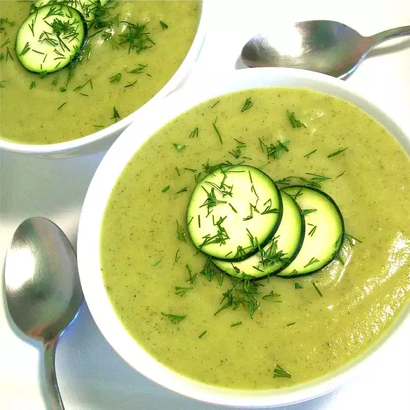

A delicious soup served anytime.
Looking for squash soup recipes? Allrecipes has more than 250 trusted squash soup recipes complete with ratings, reviews and cooking tips.

Recipe by William Uncle Bill Anatooskin.
Ingredients
- 2 tablespoons margarine
- 8 zucchinis, chopped
- teaspoon dried thyme
- ½ teaspoon dried basil
- ¼ teaspoon ground white pepper
4 cups chicken broth
1 cup whole milk
¼ cup dry potato flakes
Directions
- In a large saucepan, heat margarine over medium heat. Add zucchini and cook, stirring, until tender, about 5 minutes. Remove from heat and set aside.
- In a medium-sized cooking pot, add broth and bring to boil. Add zucchini/potato mixture; reduce heat and simmer about 15 minutes.
Back to top
Back to Home page